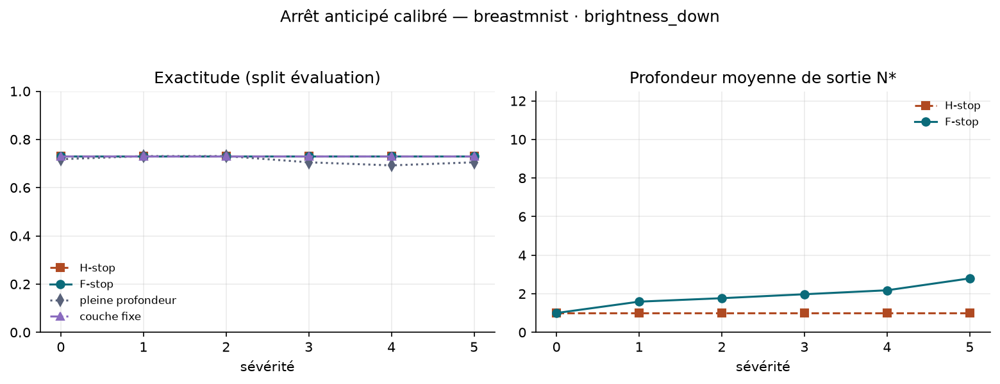
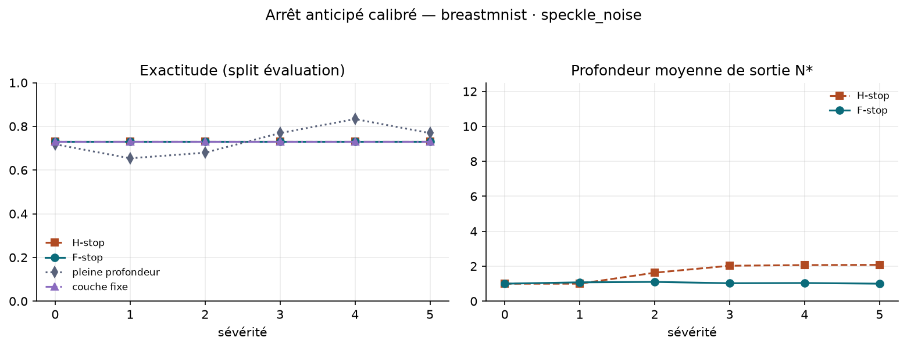
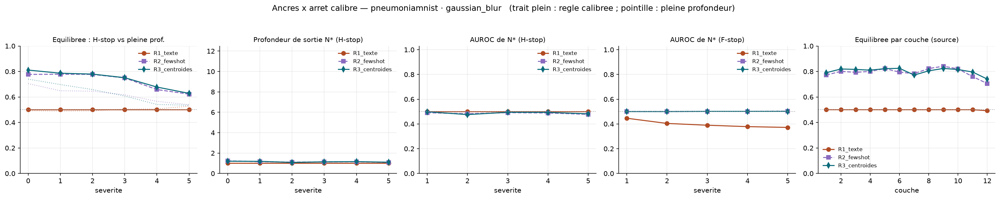
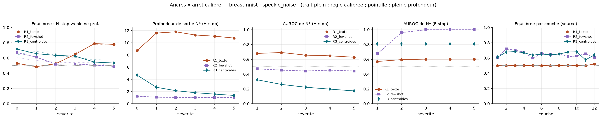
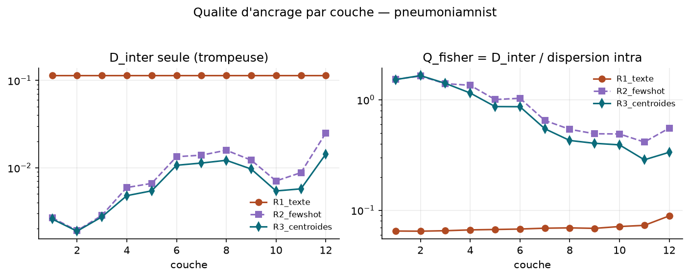

Détection de décalage d'acquisition par énergie libre F vs entropie H, sans aucun entraînement,
puis trajectoires des observables en fonction de la profondeur du ViT.
Modèle ViT-B-16-quickgelu (poids openai), T = 2τ ≈ 0,0200. Chaque chiffre provient d'un
outputs/<run_id>/metrics.json versionné dans le dépôt.
Évalué à la sévérité maximale (5), corruption vs images propres :
| # | Critère | Seuil |
|---|---|---|
| C1 | AUROC(F) | ≥ 0,70 |
| C2 | AUROC(H) | ≤ 0,60 |
| C3 | AUROC(F) − AUROC(H) | ≥ 0,05 |
La prédiction est confirmée seulement si les trois tiennent.
BreastMNIST (échographie, 7 corruptions) et PneumoniaMNIST (radiographie, 4 corruptions), sévérités 0–5, ensemble d'invites, seed 0. Analyse appariée par DeLong + bootstrap stratifié 10 000.
| Dataset | Corruption | AUROC(F) | AUROC(H) | ΔAUROC [IC 95 %] | p (DeLong) |
|---|---|---|---|---|---|
| breast | pixelate | 1,000 | 0,888 | +0,112 [+0,078, +0,150] | 1,9e−9 |
| breast | jpeg_compression | 0,920 | 0,711 | +0,208 [+0,143, +0,274] | 7,7e−10 |
| breast | motion_blur | 0,885 | 0,760 | +0,125 [+0,060, +0,190] | 1,7e−4 |
| breast | speckle_noise | 0,814 | 0,734 | +0,080 [+0,006, +0,154] | 0,032 |
| pneumonia | gaussian_blur | 0,970 | 0,798 | +0,172 [+0,148, +0,198] | 4,1e−41 |
| breast | brightness_up | 0,594 | 0,677 | −0,083 [−0,176, +0,012] | 0,083 |
| breast | brightness_down | 0,359 | 0,563 | −0,204 [−0,297, −0,112] | 1,3e−5 |
| breast | contrast_down | 0,299 | 0,498 | −0,199 [−0,287, −0,112] | 7,4e−6 |
| pneumonia | gaussian_noise | 0,127 | 0,462 | −0,335 [−0,368, −0,300] | 1,7e−86 |
| pneumonia | brightness_down | 0,200 | 0,644 | −0,445 [−0,482, −0,406] | 8,0e−118 |
| pneumonia | contrast_down | 0,209 | 0,698 | −0,490 [−0,526, −0,452] | 1,7e−148 |
prediction_confirmee: false partout. Réfutation consignée telle quelle.
F ≫ H sur les corruptions qui détruisent la structure spatiale (pixelate, jpeg, motion_blur, speckle, gaussian_blur) ; F passe sous le hasard sur les corruptions photométriques (brightness, contrast, bruit gaussien radiographique) : les images corrompues se rapprochent des ancres textuelles. F est un détecteur signé.


Distance de Mahalanobis du couple (F, H) au nuage source, calibrée sur la source seule.
Gain incrémental : meilleur sur 5 des 11 configurations (dont pneumonia·gaussian_noise 0,803 → 0,837),
équivalent sur 3, moins bon sur 3. brightness_up reste sous le hasard même en bivarié —
la cible se rapproche du centre source dans le plan (F, H) ; aucune statistique de distance
calibrée sur la source ne peut le voir.
Sonde « logit lens » : embedding CLS après chacun des 12 blocs du ViT visuel, projeté sur l'espace des ancres, sans aucun entraînement. Expérience exploratoire déclarée (pas de seuil pré-enregistré). BreastMNIST, sévérités 0–5, seed 0.
| Corruption | Meilleure couche (F) | AUROC(F) à cette couche | AUROC(F) couche 12 | run id |
|---|---|---|---|---|
| speckle_noise | 3 (et 3–7) | 1,000 | 0,814 | 20260901T165926Z_breastmnist_beee8e35 |
| motion_blur | 11 | 0,982 | 0,885 | 20260901T170336Z_breastmnist_19a29d7c |
| brightness_down | 1 | 0,997 | 0,359 | 20260901T170957Z_breastmnist_1dfe8046 |
Trois lectures honnêtes :


Trois façons de définir les ancres μk (protocole §2.3), centroïdes calculés sur le split train source uniquement (anti-fuite) : R1 = invites textuelles (zero-shot), R2 = centroïdes few-shot (k = 16 par classe), R3 = centroïdes sur le train complet (n = 546). Expérience exploratoire déclarée. BreastMNIST, sévérités 0–5, seed 0.
| Régime | Dinter | Bal. acc. (sév. 0) | AUROC(F) sév. 5 speckle | AUROC(F) sév. 5 brightness_down |
|---|---|---|---|---|
| R1 — invites textuelles | 0,1032 | 0,517 | 0,815 | 0,360 |
| R2 — few-shot (k=16) | 0,0208 | 0,597 | 0,977 | 0,845 |
| R3 — centroïdes complets | 0,0073 | 0,687 | 0,977 | 0,843 |
Runs : 20260905T164120Z_breastmnist_fe6d6b35 (speckle_noise), 20260905T163735Z_breastmnist_bccf7433 (brightness_down).
Trois lectures :


Avertissement ajouté le 2026-09-05 — l'économie annoncée ci-dessous n'est pas interprétable telle quelle. Cette expérience calibre sur l'exactitude brute. Or l'expérience 5 a établi que cette exactitude vaut 0,731 à chacune des douze couches sous ancres textuelles, soit exactement la proportion de la classe majoritaire de BreastMNIST : le critère est maximisé par le prédicteur dégénéré qui répond toujours la même classe, et l'« exactitude préservée » est la préservation de ce taux, non d'un pouvoir diagnostique. Mesurée en exactitude équilibrée, la performance de ces ancres est de 0,500, c'est-à-dire le hasard. Les chiffres d'efficience de cette section sont donc conservés comme trace du chantier, non comme résultat exploitable : voir l'expérience 5 ci-dessous.
Règle d'arrêt par échantillon : sortie à la première couche où l'observable (H ou F) passe sous un seuil ε. Seuils et couche fixe de référence calibrés sur une moitié stratifiée du split test source (77 images) ; évaluation sur l'autre moitié (79). Ancres textuelles R1. Expérience exploratoire déclarée. Runs : 20260901T182032Z_breastmnist_a8b68f84 (speckle), 20260901T182436Z_breastmnist_a1a557b5 (motion_blur), 20260901T183051Z_breastmnist_898385f7 (brightness_down).


Croisement des expériences 3 et 4. L'arrêt calibré est rejoué sous les trois régimes d'ancrage, avec des centroïdes R2/R3 recalculés couche par couche sur le split train source. L'expérience 4 avait trouvé la règle dégénérée (sortie en couche 1) ; le test n'est non trivial que là où l'exactitude varie réellement avec la profondeur. Expérience exploratoire déclarée. BreastMNIST et PneumoniaMNIST, sévérités 0–5, 20 runs = 5 graines × 4 configurations, tous propres (commit a9b5f12). Toutes les valeurs ci-dessous sont des moyennes ± écart-type sur les cinq graines.
Changement de critère, à lire avant toute comparaison avec l'expérience 4. L'expérience 4 calibrait sur l'exactitude brute. Le premier run de l'expérience 5 a montré que cette exactitude vaut 0,731 aux douze couches sous ancres textuelles, soit exactement la proportion de la classe majoritaire de BreastMNIST : le critère était maximisé par le prédicteur dégénéré qui répond toujours la même classe. L'expérience 5 calibre sur l'exactitude équilibrée. Les profondeurs des deux expériences ne sont pas comparables.
| Cohorte | Régime | Couche oracle | Équilibrée à l'oracle | Équilibrée couche 12 | Écart |
|---|---|---|---|---|---|
| BreastMNIST | R1 — invites textuelles | 7,6 ± 6,0 | 0,509 ± 0,009 | — | — |
| BreastMNIST | R2 — few-shot (k=16) | 5,2 ± 3,1 | 0,748 ± 0,061 | 0,614 ± 0,065 | +0,134 |
| BreastMNIST | R3 — centroïdes complets | 4,0 ± 3,4 | 0,703 ± 0,041 | 0,658 ± 0,035 | +0,045 |
| PneumoniaMNIST | R1 — invites textuelles | 1,0 ± 0,0 | 0,500 ± 0,000 | — | — |
| PneumoniaMNIST | R2 — few-shot (k=16) | 4,8 ± 2,7 | 0,821 ± 0,016 | 0,728 ± 0,031 | +0,093 |
| PneumoniaMNIST | R3 — centroïdes complets | 8,4 ± 1,3 | 0,835 ± 0,023 | 0,730 ± 0,014 | +0,105 |
Exactitude équilibrée, domaine source, split évaluation.
Agrégation : outputs/aggregate/exp05_summary.csv. La couche oracle est choisie sur le
split d'évaluation lui-même : c'est une borne supérieure optimiste, pas une performance atteignable.
| Cohorte · corruption | Type | R2 few-shot | R3 centroïdes |
|---|---|---|---|
| Pneumonia · gaussian_blur | structurel | +0,134 ± 0,153 | +0,151 ± 0,111 |
| Breast · speckle_noise | structurel | +0,010 ± 0,104 | +0,029 ± 0,074 |
| Breast · brightness_down | photométrique | −0,017 ± 0,042 | −0,035 ± 0,057 |
| Pneumonia · brightness_down | photométrique | −0,073 ± 0,069 | −0,038 ± 0,042 |
Écart d'exactitude équilibrée entre la couche fixe calibrée et la pleine profondeur, à sévérité 5. Positif = la sortie anticipée est meilleure. La couche fixe est choisie sur la moitié calibration de la source, jamais sur la cible.
Sur le flou gaussien, la couche fixe calibrée l'emporte nettement et les cinq graines sont positives sous R3. Sur les corruptions photométriques elle perd : sous R3 sur PneumoniaMNIST, les cinq graines sont négatives. C'est la même dichotomie structurel/photométrique que l'expérience 1 avait trouvée pour l'énergie libre comme détecteur, réapparue ici sur une grandeur toute autre. Une version antérieure de cette page annonçait un gain de +0,241 sur une seule graine ; il vaut +0,134 ± 0,153.
La règle d'arrêt par échantillon du croquis fondateur reste, elle, battue par la couche fixe calibrée. Ce qui survit du croquis est que toutes les couches ne se valent pas, non que chaque image doive choisir la sienne.
| Cohorte · corruption | Régime | AUROC (règle F) | AUROC (règle H) | H bilatérale |
|---|---|---|---|---|
| Breast · speckle_noise | R2 | 0,900 ± 0,224 | 0,397 ± 0,130 | 0,526 ± 0,168 |
| Breast · brightness_down | R2 | 0,900 ± 0,224 | 0,376 ± 0,191 | 0,560 ± 0,232 |
| Breast · brightness_down | R3 | 0,617 ± 0,160 | 0,240 ± 0,096 | 0,446 ± 0,192 |
| Pneumonia · brightness_down | R3 | 0,886 ± 0,080 | 0,500 ± 0,007 | 0,500 ± 0,007 |
| Pneumonia · gaussian_blur | R3 | 0,514 ± 0,020 | 0,482 ± 0,006 | 0,482 ± 0,006 |
AUROC des profondeurs de sortie source contre cible, sévérité 5. Le compteur de couches est produit gratuitement par la règle d'arrêt. La colonne bilatérale applique à N* la transformation |N* − médianesource(N*)|.
Le compteur de couches est un détecteur réel mais instable : sous la règle F il atteint 0,86 à 0,90 sur trois configurations, avec un écart-type de 0,224 sur BreastMNIST, où la même configuration donne 0,500 ou 1,000 selon la graine. Il échoue sur le flou gaussien, là même où le gain d'exactitude est maximal : détection et efficience ne vont pas de pair. La transformation bilatérale récupère partiellement les détecteurs inversés sur BreastMNIST, de 0,24–0,40 vers 0,43–0,56, soit du franchement inversé au voisinage du hasard ; elle ne change rien sur PneumoniaMNIST, où les profondeurs sont quasi constantes et n'offrent aucune dispersion sur laquelle opérer.
| Cohorte | Régime | Qgap | Équilibrée mesurée (couche 12) |
|---|---|---|---|
| BreastMNIST | R1 — textuelles | 0,0799 ± 0,0000 | 0,509 |
| BreastMNIST | R2 — few-shot | 0,1637 ± 0,0440 | 0,614 |
| BreastMNIST | R3 — centroïdes | 0,0799 ± 0,0000 | 0,658 |
| PneumoniaMNIST | R1 — textuelles | 0,0892 ± 0,0000 | 0,500 |
| PneumoniaMNIST | R2 — few-shot | 0,3960 ± 0,1023 | 0,728 |
| PneumoniaMNIST | R3 — centroïdes | 0,3546 ± 0,0094 | 0,730 |
Qgap = Dinter / distance ancres-nuage, mesuré sur le nuage train source à la couche 12. R1 et R3 ne dépendent pas de la graine ; R2 en dépend par son tirage few-shot.
Le critère réussit à moitié. Il corrige l'inversion due au gap de modalité — la distance ancres-nuage vaut ≈ 1,28 pour les invites textuelles contre ≈ 0,04 à 0,09 pour les ancres de données — là où Dinter seule affirmait le contraire. Mais il échoue sur le classement fin : sur BreastMNIST il égalise R1 et R3 dont les exactitudes diffèrent de 0,15, et sur PneumoniaMNIST l'écart entre R2 et R3 n'est pas séparable compte tenu de la dispersion. Il sert donc à rejeter des ancres détachées du nuage, pas à départager deux jeux d'ancres tous deux ancrés dans les données.



openai sont quasi aveugles sur BreastMNIST
(balanced accuracy 0,517 à sévérité 0) — toute lecture de H vs F est conditionnée à cette
géométrie d'ancres faible.